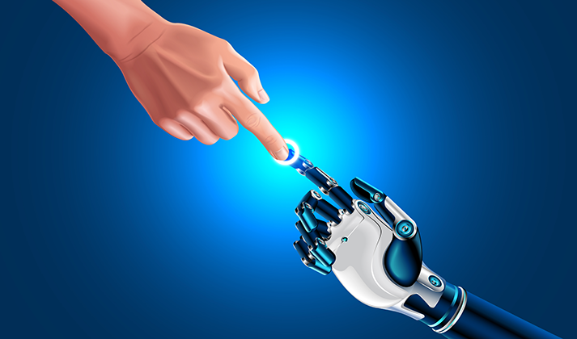

Have you ever wondered how does a computer program execute? Watch this video to know more!!!
What are chatbots? - Explained with Demo using python
Heard of chatbots? See the demo of How it works? I have created a scripted chatbot using python.
Android Architecture
Watch this video to understand the Architecture of the Android Operating System
Human Computer Interaction

As Leo Cherne said “The computer is incredibly fast, accurate, and stupid. Man is incredibly slow, inaccurate, and brilliant. The marriage of the two is a force beyond calculation”. Computers are known for their speed, accuracy and Computational power but are so stupid that they do not have own brain to do something without the instructions given by us. Now a days computers have become an integral part of our lives. There are a plethora of reasons as to why computers are inevitable in our lives. Everything is becoming online and digital! E-commerce sites and social media have taken the world to the next level! The computer as we know it today had its beginning with a 19th century English mathematics professor named Charles Babbage. He designed the Analytical Engine and it was this design that the basic framework of the computers of today are based on.
Computers were designed originally for computational purposes and then through the years have evolved so much and is used for multiple purposes. Earlier, there were Analog computers which used a direct mechanical or electrical model of the problem as a basis for computation. It was only after Digital computers were designed that new evolutionary models were proposed for making the computer turn as a multi-purpose one! And then the stored program concept was introduced. A Digital computer could understand only binary language. The movement of data within the computer takes place through digital signals and digital data formats.
Users could not directly interact with computer hardware. So, a necessity was felt to bring in something that acts as an interface between the user and the computer hardware. Hence system software called operating systems were created. An operating system (OS) handles your computer needs by finding resources, applying hardware management and providing necessary services.
Earlier, programmers used to interact with the computer using the binary language but, it was tedious. So they ended up inventing a language that humans can use to communicate called the Assembly Level Language (ALL). A special software called assembler converts the program written in the assembly language into machine level language or low level language. To make the language format like English, invention of High Level Languages were made. In order to convert the HLL into MLL, software called compilers were created.
Technology is advancing day by day in every field of computer science. The latest technologies that have been turned into buzzwords of the recent time are Artificial Intelligence (AI), Block-chain, Augmented Reality, Mixed Reality, Internet of Things (IOT) and etcetera. Also, Machine learning is an application of artificial intelligence (AI) that provides systems the ability to automatically learn and improve from experience without being explicitly programmed. These are changing the ways Humans interact with computers. Humans interact with computers in many ways; the interface between humans and computers is crucial to facilitating this interaction.
Augmented Reality, Mixed Reality and Quantum computing will definitely revolutionize the Human Computer Interaction. Robotics too plays a major role in this direction. The people who interact with Robots may have little or no training in robotics, and so any interface will need to be extremely intuitive. Science fiction authors also typically assume that robots will eventually be capable of communicating with humans through speech, gestures and facial expressions, rather than a command-line interface which is slowly being made possible and will definitely advance even more in the future. As Edward Teller said “The science of today is the technology of tomorrow” so, let us hope for a safe, advanced, reliable Human Computer Interaction in the future!
Social Media And Its Impact On Our Day To Day Life
No one can imagine their lives without smartphones. People are so much attached to the smartphones that they forget to realize that their relationship with the family is slowly fading away. Some people are so much addicted that they put a train of status in WhatsApp and stories on Instagram and they can’t resist themselves from doing that.
So, what makes us so much addicted to smartphones and social media? Initially when telephone was invented, it changed the way people communicated and brought an evolution in the communication system. So, a phone was a means of communication. In the 1980s, Internet became so popular and mobile manufacturers wanted to make a revolution the way the mobile phones were manufactured. It was then the smartphones or phones with touch screens started its rule over the world. Now, because of the people’s addiction to smartphones and social media, the basic human interaction and communication is lost and everything has become text based conversation or chatting. People are attracted towards the features that every kind of a smartphone offers and intend to buy it. Social Networking sites like Facebook, Instagram and Twitter are enjoying their lives by earning billions of dollars of money. People should not forget that everything is a business.
We should not forget that these companies have taken advantage of the substance/chemical called 'Dopamine' that causes happiness among humans when they are complemented by others. This is the reason why there are parameters like “likes”, “comments” and “shares” being used in Facebook or Instagram or Twitter. This makes people addicted to it and they lose the control of their minds. Although it may appear that these websites are very secure, it is not the case. All the posts, videos, images, comments, etcetera are known and are publicly visible to the owners of these companies. One should not share anything and everything on these sites. But this doesn’t stop the addicted people to share even their private photos to their boyfriends or girlfriends! All the aforementioned points are based on the points given by cyber security experts. Be careful your photos may go into bad hands. But is it that social media is bad in itself!? No, it can’t be said like that! It depends on the person who uses it and how? It is a boon if used in a judicial manner else it is a bane. It could make you to land up in a rehabilitation center! Do not be so addicted to social media! Do not believe whatever is forwarded through WhatsApp! Do not be a webqoof!
Interaction with family members and friends should be made strong in order to make your mind forget bout smartphone. Use your time productively by making a schedule or time table .Do not waste your precious time playing games or chatting. They are not gonna help you in your life! Games and social media must be used only for entertainment purpose when you are free and should now be made into a habit.
I would like to stress upon one more important issue. Children have become insane and so much addicted to the game called PUBG. The game has become so popular that contests are conducted at National Levels. But people need to understand the story behind this game. This game is played online, so whenever you receive any notification to your phone that can be read by the person sitting at the server room of the company. They will be able to read every private message that you receive. We all assume that data is safe but it is not!
Spend your time by reading books, interacting with friends and family members and do something productively without wasting your time. The technological advancements in science is a never ending process. But that technology should not spoil our lives. It is in our hands!
Computer Science And Growing Technology
It is of no doubt that the field of Computer Science is reaching newer heights day by day by overcoming many real life challenges. Our society has seen so much technological advances in this field since the mid-20th century. It is an undeniable fact that we can’t even imagine our life without computers! Computers were invented for using them initially to perform complex computations. The field of Computer Science has been immensely revolutionized and now-a-days we have sophisticated and technologically advanced computers which can perform more efficiently than their previous generations.
Also it is evident from the recent research ideas of the “Quantum Computer” that the technological advancements that are taking place is a never ending process. Every day Computer scientists explore with new ideas. Innovative thinking is very important in the field of computer science.
Computers are in general considered to be dumb machines. Also generally people think that computers can’t take their own decisions; that was considered to be a major disadvantage of the computer. But computer scientists and data analysts are confident and are researching to overcome this drawback! Moreover we have been able to see that these things are being made possible by Machine Learning and Artificial Intelligence. Google’s Duplex is one of the mind blowing examples of Artificial Intelligence in which AI is used for booking tickets, reservation in Restaurants and booking appointment in hair salons. It is an extension of the Google Assistant that allows it to carry out natural conversations by mimicking human voice.
We can’t predict about the future generation computer systems. Also the branches of Computer Science like Data Mining and Cloud Computing have transformed the way of data storage. It provides data services and software and hardware are delivered as services over the Internet. We are familiar that Microcomputers include Laptop, Smartphones, Tablets and Desktops. The advancements in the field of Mobile computing and Mobile Application Development is simply outstanding! The computing capabilities of smartphones is extensively high when compared to basic cellular phones. Top companies like Apple, Windows, Oneplus, Xiaomi, Nokia and other Indian brands like Xolo, Lava provide Smart phone manufacturing services. Smart phones have other commendable features apart from their computational capabilities like Complete security, Video streaming, Gaming, Biometric security like Face Recognition, fingerprint scanning etcetera.
It is necessary for the Engineers of the Electronics, Electrical, Mechatronics and Computer science to work together to accomplish some of the technological and innovative challenges. Recent researches are going on in the field of Data mining, Machine Learning, Artificial Intelligence and Quantum computing. Undoubtedly Quantum computing is going to massively revolutionize the way of the current computing. Also the areas such as Virtual Reality and Augmented Reality are going to change the Graphics domain characteristics and other camera characteristics of a smartphone. One day Teleporting would be made possible and every one would be Awestruck! We can definitely expect computers to play a major role in the invention of a Time Machine! (If it is invented in future!) All the branches of Science must work together to make some of the tasks considered impossible currently, possible in future.
Finally I would like to conclude that no one can stop the process of evolution of technology and advancements that are taking place at a faster pace every day. We can say that fruitful products of Science are unpredictable and unimaginable and there is nothing impossible!